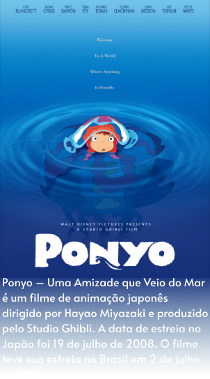
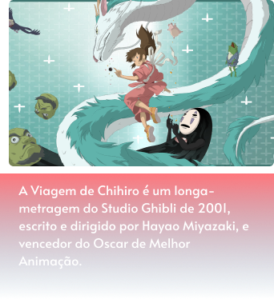

O Studio Ghibli é um estúdio de animação japonês,
sediado em Koganei, Tóquio. Fundado em 1985, o
estúdio já produziu 21 longas de animação, sendo
o primeiro O Castelo no Céu (1986) e o mais recente
As Memórias de Marnie (2014).
 